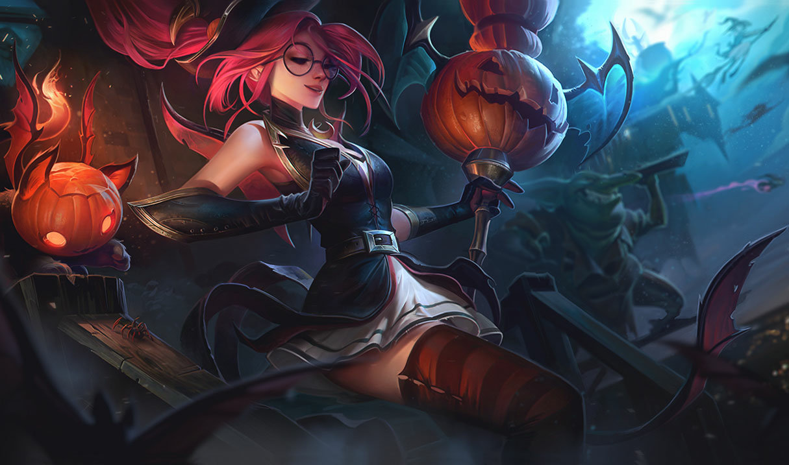
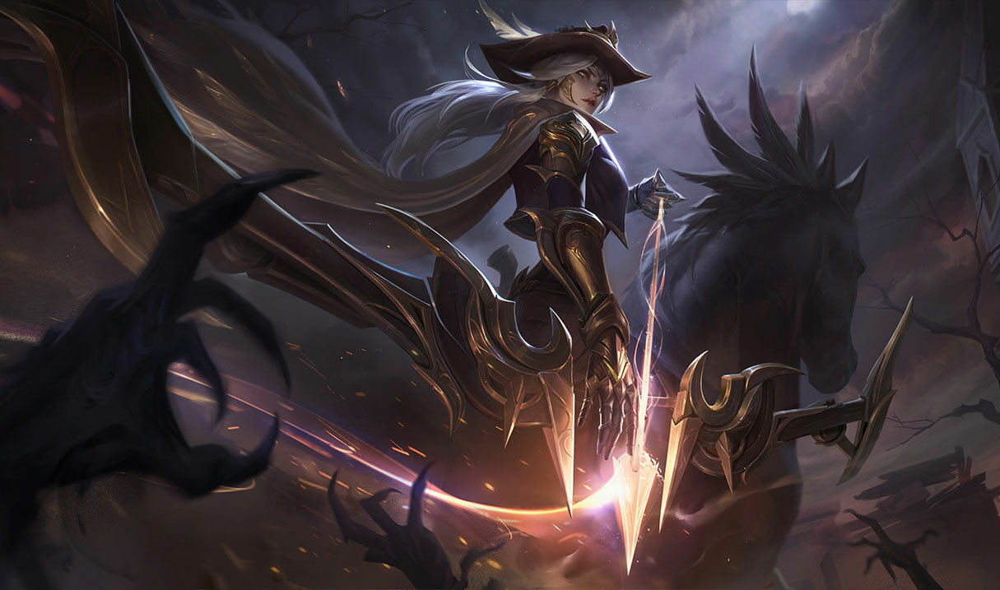
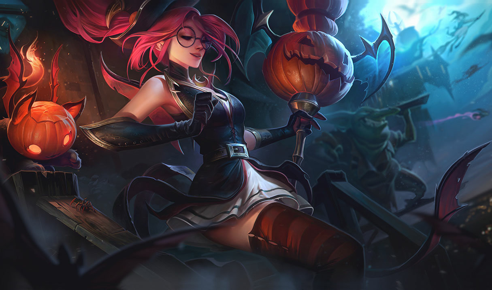
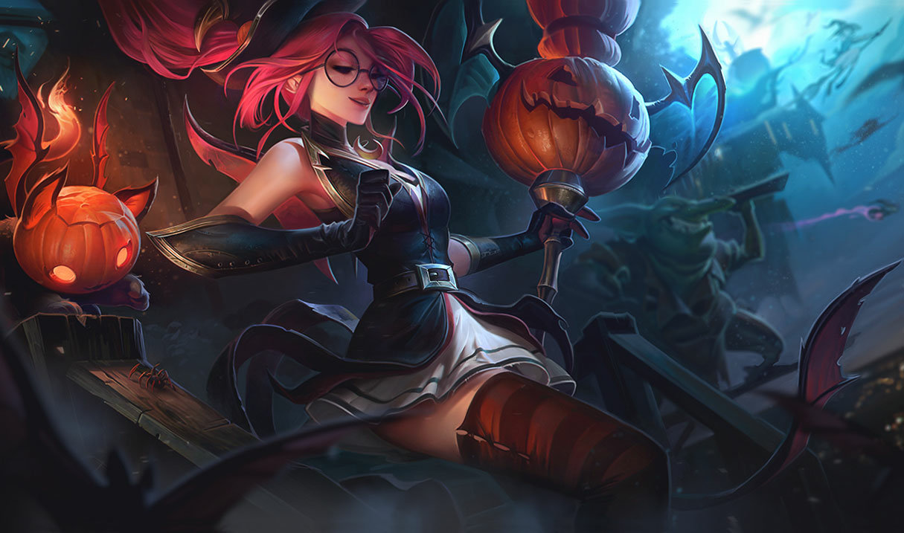
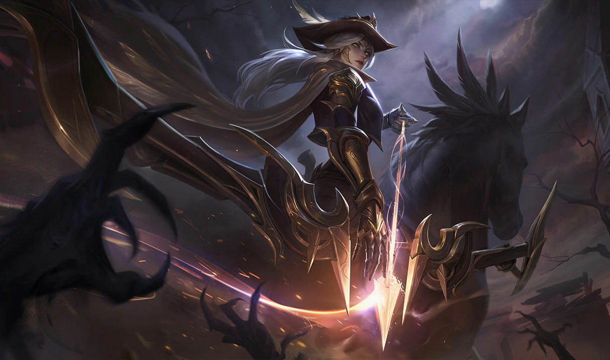
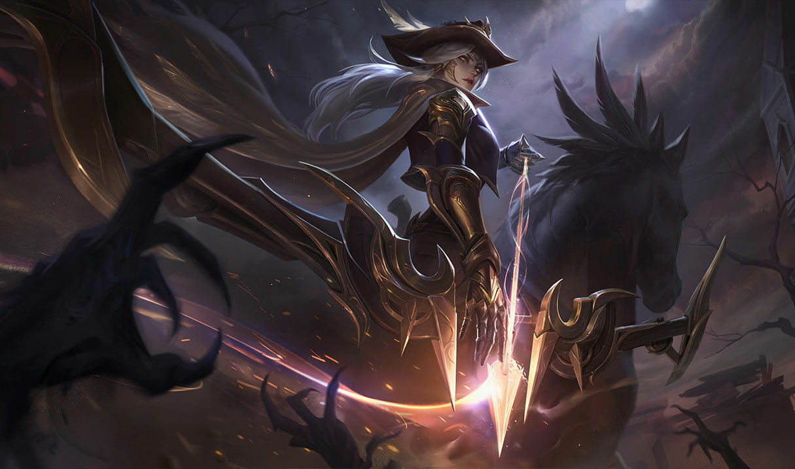

Riot font leurs propres ArtWork pour les skins et les champions comme ci-dessous.


Ils font aussi leurs propres cinématiques pour introduire des skins,champions,modes de jeu etc ...
Cette vidéo est une création de Riot pour introduire de nouveaux skins sur League of Legends ces skins font parties de la série KDA.
K/DA is a virtual K-pop girl group consisting of four themed versions of League of Legends characters Ahri, Akali, Evelynn and Kai'Sa. Evelynn and Kai'Sa are voiced by American singers Madison Beer and Jaira Burns respectively, while Ahri and Akali are voiced by (G)I-dle members Miyeon and Soyeon. K/DA was developed by Riot Games, the company behind League of Legends, and unveiled at the 2018 League of Legends World Championship with an augmented reality live performance of their first and only song, "Pop/Stars". A music video of the song uploaded to YouTube subsequently went viral, surpassing 100 million views in one month, and reaching over 250 million views, as well as topping Billboard's World Digital Song Sales chart.
The conception of K/DA was based on Riot's expressed desire to create more musical content in the future, with the characters chosen based on K-pop archetypes. The band was created to promote the League World Championship and to sell in-game K/DA skins of the characters in League of Legends. K/DA has subsequently achieved significant popularity both within and beyond that of the League of Legends fandom, and has received critical acclaim, especially with regards to their performance during the World Championship and the impact of gaming on the music scene.
Pentakill is a series of parallel universe skins in League of Legends featuring champions as members of the greatest (and possibly only) metal band on Runeterra.
In-game, a pentakill is a distinguished achievement of single-handedly killing all enemy champions in short succession. The result of performing this feat tends to result with the enemy team being defenseless for a short while, which is especially critical if the enemy's base has been invaded. Thus, the name holds much significance, fitting for Runeterra's greatest rock band.
As SivirSquare Sivir lies betrayed and bleeding, something incredible occurs. For though she does not know it, Sivir is the last in the bloodline of AzirSquare Azir, Shurima’s lost emperor. And as her blood soaks into the ancient sands, a deep magic sparks to life. Resurrection!
First Azir’s mind, then his body. Snatched back from oblivion to be reborn. Then he sees Sivir, wonders at her face, he sees himself in this daughter of Shurima. In that moment, he has no thought of empires or rituals. He only knows: she needs his help.
He must take her to the Oasis of the Dawn - the Mother of Life. He smells the waters - smells of life. He prays he is in time. He does not dream that he, Shurima’s greatest emperor, can at long last earn his Ascension and bring back his broken city. He dares not dream that if he can save her...Azir can save them all.


 

 
